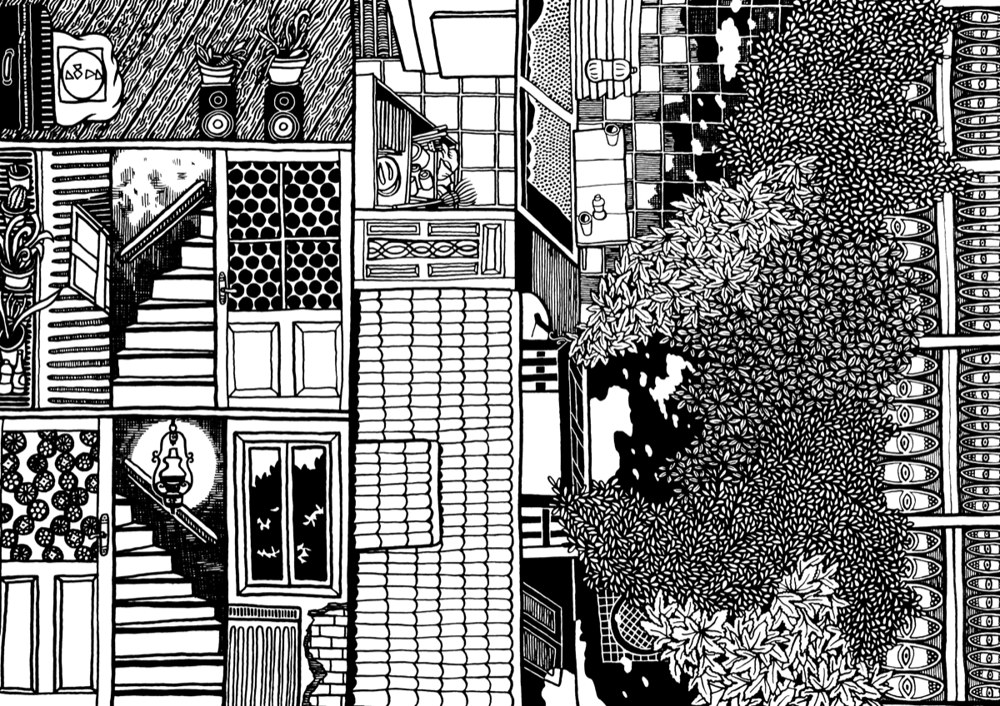
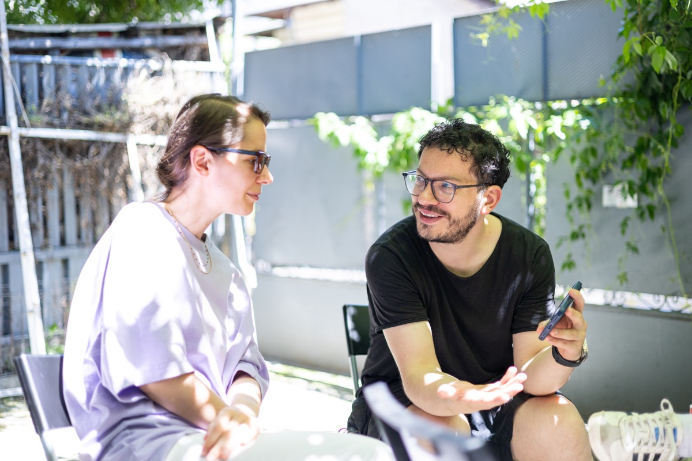
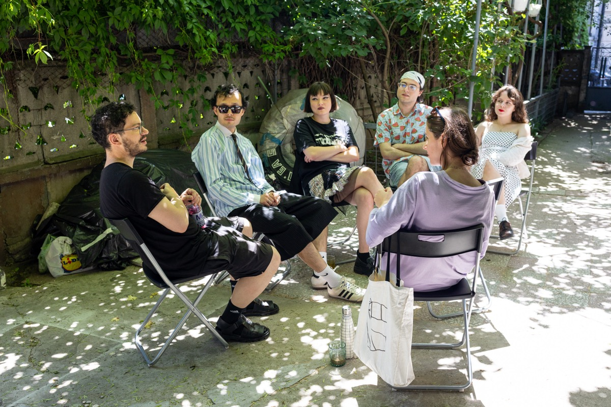
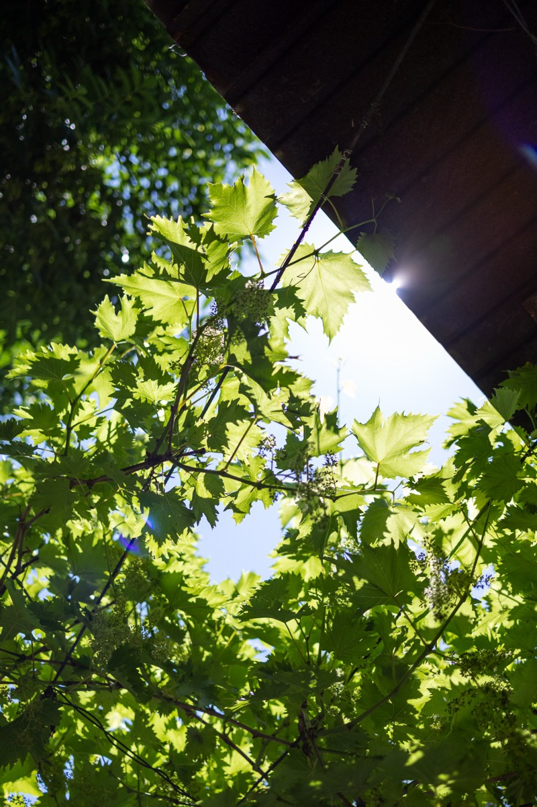
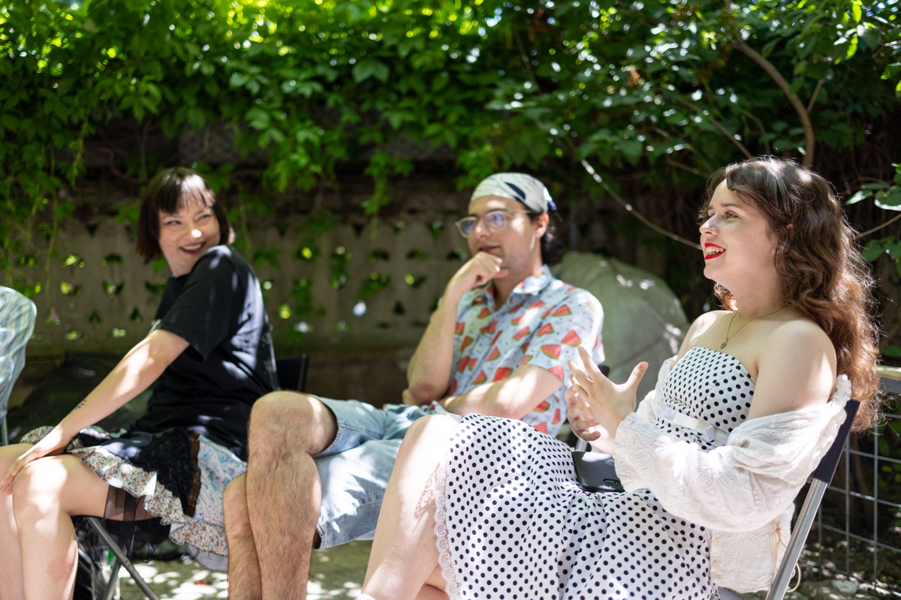
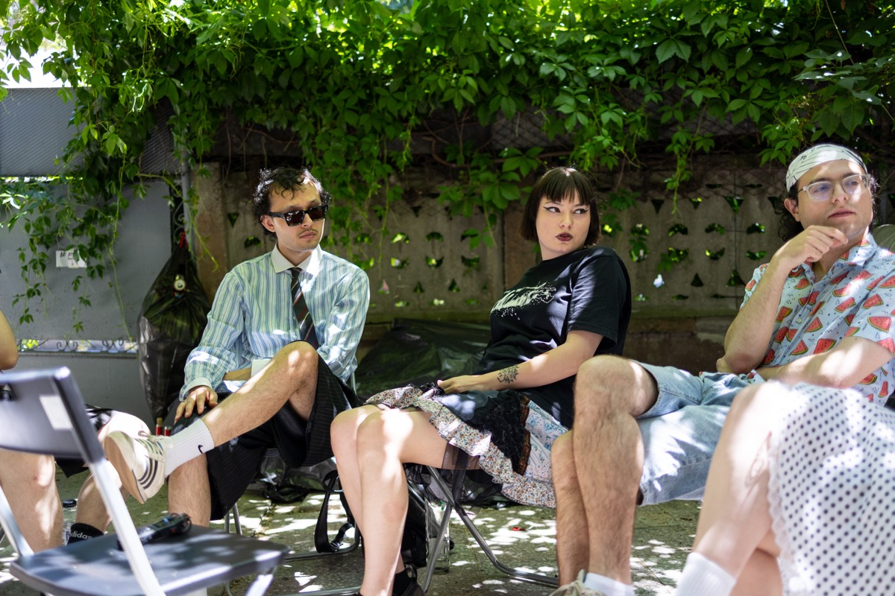

Pentru a afla mai multe despre cum a apărut NON art space și despre activitatea sa din prezent, am stat de vorbă cu Dimitrie Grigorescu, arhitect și inițiatorul NON, și cu artiștii Anca Enache (1/3 din colectivul Camera 36), Ana Bălan & Azadbek Bekchanov și Dimitrie Luca Gora. Am discutat despre rolul pe care îl joacă NON Art Space în comunitatea artistică, despre renovarea atelierelor realizată prin forțe proprii, despre relația cu vecinătatea, dar și despre trecutul casei și transformarea sa recentă într-un loc dedicat artei contemporane.
E ultima săptămână din mai. Puțin înainte de ora zece dimineața plec din Piața Sudului spre Obor. Tramvaiul 1 mă lasă la Lizeanu, o stație de care mă leagă amintiri de pe vremea când mergeam la Casa Jurnalistului, comunitatea de jurnaliști independenți, pe strada Viitorului 154. Cobor și o iau pe jos câteva minute până pe Nicolae Kirilov.
La numărul 1, spațiul NON aproape că dispare sub vegetația care i-a acoperit gardul. Din spatele unei porți gri se aud câteva voci. În curte mă întâmpină artiștii Ana Bălan, Azadbek și Dimitrie Luca Gora. Mai târziu apar și Anca Enache și Dimitrie Grigorescu.
Scoatem câteva scaune din anexa casei, acum galerie, și le așezăm în semicerc, la umbra viței-de-vie, despre care Dimitrie Grigorescu spune că face o recoltă de struguri foarte dulci. E liniște, multă verdeață, iar timpul pare să curgă mai încet decât pe bulevardul agitat din șoseaua Ștefan cel Mare.
Locul îmi amintește imediat de Casa Jurnalistului, nu doar prin proximitate, felul în care arată, ci prin atmosfera de casă de vacanță în care oameni vin să lucreze împreună. Diferența este că aici nu locuiește nimeni: camerele sunt ateliere, iar locul prinde viață dimineața și se golește seara, când artiștii pleacă acasă.
„Când te muți de la Universitate, din spatele TNB, la Obor, poate fi considerat un pas înapoi”, îmi spune Dimitrie. Într-o capitală repetentă la capitolul infrastructură, în care multe evenimente culturale se suprapun, alegerea unui spațiu presupune un echilibru între vizibilitate și accesibilitate. Totuși, am văzut că oamenii sunt dispuși să parcurgă un drum mai lung atunci când există o concentrație de evenimente ca la Combinatul Fondului Plastic.
Mutarea n-a fost o decizie luată peste noapte. Ea a venit după un an petrecut într-un apartament cu patru camere de pe strada Jean Louis Calderon 36. Dimitrie spune că s-a consultat cu mulți oameni înainte să facă mutarea. Unii îl sfătuiau să rămână cât mai aproape de centru. Alții îi spuneau că tocmai cartierele aflate în afara inelului central au nevoie de astfel de spații.
„În mod tradițional, artiștii se duc în zone mai puțin dezvoltate și le transformă, mental înainte de toate”, povestește Dimitrie. „Dintr-odată, un loc în care nu voiai să mergi devine, pentru că apar mulți artiști acolo, un loc dezirabil”. Cu alte cuvinte, prezența artistelor și artiștilor recodifică, în mintea oamenilor, un cartier ignorat într-unul de interes, cu mult înainte să apară schimbări sesizabile.
Zona Viitorului–Kirilov, aflată la limita dintre vechiul București și fostul Târg al Moșilor (Obor), s-a dezvoltat la începutul secolului XX, odată cu extinderea orașului spre nord-est. După 1948, pe arterele din apropiere, precum Șoseaua Ștefan cel Mare și Mihai Bravu, au fost construite blocuri, însă în interiorul insulei urbane a rămas mare parte din țesutul de case și vile interbelice.
În următorii 10-20 de ani, Dimitrie estimează că zona se va transforma vizibil. Pe aceeași stradă cu NON sunt patru clădiri în construcție. Iar în proximitate mai sunt câteva spații de artă: Studio Sentimental al artistei Alexandra Boaru, galeria Posibilă, Paper Traffic, sau Rezidența9. Toate cam la cincisprezece minute de mers pe jos — distanță care pare să fi fost, conform urbanistului Mikael Colville-Andersen, o scară naturală a orașelor timp de 7.000 de ani.
Dimitrie a găsit inițial o casă în Cotroceni, aproape de galeria Ivan, într-o stare foarte bună. Dezavantajul era că ar fi împărțit curtea cu vecinii, iar fiecare vernisaj sau eveniment ar fi implicat o negociere. Pe Kirilov, într-o zonă semirezidențială, sunt singuri în curte, iar faptul că locuința este pe colț oferă mai multă autonomie pentru activitățile deschise publicului. Dimitrie a ales stabilitatea în locul unei chirii care putea fluctua. A făcut un credit și a cumpărat casa pe principiul că, în teorie, rata ar trebui să fie mai stabilă decât capriciile pieței imobiliare.
Proximitatea de piața Obor, unul dintre cele mai diverse spații culturale și comerciale din București, contribuie la faptul că spațiul NON nu capătă un caracter “insular”, așa cum se întâmplă, de exemplu, la Atelierele Scânteia, unde artiștii, odată ajunși acolo, își structurează întreaga zi în funcție de activitatea în spațiu.
Nevoia unui spațiu în formula actuală, galerie plus ateliere, a apărut atât ca reacție la o problemă recurentă în rândul artistelor și artiștilor vizibilă, de exemplu, în creșterea chiriilor de la Atelierele Malmaison din 2024, cât și dintr-o rezonanță înrădăcinată în propriul trecut: nevoia unui spațiu verde, în mijlocul orașului, care „amintește de casa bunicilor”. Când a găsit casa de pe Kirilov, Dimitrie și-a dat seama că ar putea umple acest gol, pe care absența sprijinului instituțional și piața imobiliară îl evidențiază. Atunci a decis să facă loc pentru ateliere de artiști, fără teama evacuării sau a creșterii chiriei.
Dimitrie spune că a existat o perioadă în care a locuit în atelier împreună cu tatăl său, artistul Ion Grigorescu, care nu a avut mereu un spațiu de lucru propriu și chiar și acum lucrează acasă. Așa a ajuns să înțeleagă mai bine nevoia unui spațiu de lucru separat, iar astăzi încearcă să își construiască o viață mai organizată, în care să poată alege spațiile în care lucrează și trăiește. „Nu știu dacă părinții mei au avut cu adevărat această libertate de a alege locurile în care au stat și au lucrat”, spune Dimitrie.
Într-un moment de liniște, Dimitrie îl întreabă pe Gora ce înseamnă pentru el atelierul. Gora spune că își construiește lucrările în etape, cu schițe, uneori în dialog cu oameni din producție, pentru a ajunge la soluții mai bune. Dincolo de asta, apare și o discuție mai largă despre ideea de autor și atelier pe care ține s-o sublinieze.
„În România încă există prejudecata romantică că artistul trebuie să facă totul cu mâna lui, altfel nu e autentic. E o idee legată de pictură, atelier clasic, meșteșug și suferința artistului singur. Din Renaștere exista clar ideea de atelier, unde maestrul avea ucenici, asistenți și meșteri care executau părți din lucrare. La Leonardo, Michelangelo, Rafael, Rubens mai târziu, nu totul era făcut exclusiv de mâna artistului.”
Atelierul celor trei artiste (Anca Enache, Ruxandra Nițescu și Georgiana Cojocaru) din colectivul Camera 36, care lucrează la intersecția dintre fotografie, instalație și mixed media, este la etajul 1 și are vedere atât spre stradă, cât și spre o casă abandonată și în ruină din apropiere. Fiecare și-a făcut locul ei în atelier: o masă, rafturi, lucrări sprijinite de pereți. Rareori lucrează toate în același timp. Uneori se intersectează în pauze, își arată ce au făcut sau își cer părerea una alteia.
Alături este atelierul Anei Bălan, artistă care lucrează la intersecția dintre instalație, sunet și imagine, pe care îl împarte cu Azadbek Bekchanov, artist și curator, interesat de relația dintre tehnologie și misticism, dintr-o perspectivă decolonială. De la geamul lor, se văd pisicile și pescărușii de pe acoperișul clădirii din față. Între cele două ateliere este un balcon deschis de unde se vede casa abandonată. Fațada este orientată spre est, ceea ce înseamnă că au lumină constantă și un golden hour memorabil de care Azadbek spune că este atașat.
Ana și Azadbek vin zilnic din Aurel Vlaicu și fac aproape o oră pe drum. Azadbek își împarte timpul între atelier și librăria franceză Kyralina, unde lucrează de câteva luni, iar Ana la fel, între atelier și un job part-time la 2/3 galeria. Paradoxal, pentru artistă, zona în care se află NON e „kilometrul zero" al Bucureștiului. „Mi se pare că de aici pot să ajung oriunde." De multe ori vine la atelier chiar și atunci când nu are de lucru, doar ca să-i salute pe ceilalți.
Pentru Anca, casa și curtea seamănă cu cele ale bunicilor, locul unde spune că se simte cea mai productivă, mai ales când reușește să stea acolo câte două săptămâni. Casa din Kirilov, spune ea, n-a reușit s-o sperie noaptea așa cum credea inițial, când a stat odată până la patru dimineața. „M-am urcat și în pod să-mi dau jos niște lucrări, și nu mi-a fost frică deloc."
Prietenia dintre Ana și Anca s-a format înainte să devină colege de spațiu, „dintr-un hazard total”. S-au cunoscut cu câteva luni înainte de mutare, fără să știe că vor ajunge să împartă același loc. Deși au practici artistice foarte diferite ca mediu, găsesc subiecte și interese în comun. „Venim una la alta pentru sfaturi. Cred că și practica noastră se schimbă prin comunicarea asta constantă”, spune Anca.
Dimitrie Gora, care lucrează cu fotografia, video-ul, instalația, pictura și sculptura și al cărui atelier se află la parter, a fost „lipiciul” și „numitorul comun” al grupului, spune Ana. „Ca să ajungem la el, trebuie să coborâm scările, deci fiecare vizită e o mică aventură. Dar vine și el la noi”, completează Anca.
Din discuția cu ei, îmi dau seama că structura unei altfel de case mici, la curte, schimbă dinamica și rescrie relațiile dintre artiști. E genul de loc în care te poți izola în atelier dacă vrei liniște, dar în același timp, configurația intimită a locului, te obligă și să interacționezi unul cu celălalt. Aici retragerea și întâlnirea coexistă fără efort.
Casa de pe Kirilov, construită în 1930, datează dintr-o perioadă în care Bucureștiul traversa una dintre cele mai intense etape de construire a locuințelor individuale. A fost locuită până de curând de un cuplu de ingineri, care s-a mutat la bloc după ce scările abrupte, cu trepte aproape verticale, dintre parter și etaj au devenit greu de urcat. „Olandezii au aceeași problemă peste tot, toate casele au scări de genul ăsta”, spune Dimitrie. „Cred că dacă te ții în formă fizic, ca nordicii sau ca japonezii, e mai ușor.” Anca Enache râde când vine vorba despre scări. „Te obișnuiești. Acum le urc două câte două, fără probleme. Practic fac și sport.”
Locuința este atipică pentru zonă. Majoritatea caselor construite în parcelările din jurul străzii Viitorului au plan alungit, de tip vagon și sunt dispuse doar la parter, însă aceasta, fiind pe colț, a fost proiectată pe verticală. Este o construcție veche, frumoasă, dar prost izolată. În mai multe locuri, pereții au fost decopertați la recomandarea unor arhitecți și restauratori, pentru ca umezeala din pământ să poată evapora fără să creeze igrasie — o soluție care lasă peretele să respire.
Renovarea a început la mijlocul lunii februarie, și a fost un proces DIY de reînsuflețire a spațiului care a accelerat și procesul de familiarizare cu noua casă. „Cred că și pentru că am renovat-o noi, am făcut-o să se simtă ca fiind a noastră”, povestește Ana. „Se simte că am pus grijă în pereți.”
Când au început amenajarea, fiecare cameră avea o altă culoare. Atelierul Anei și al lui Azadbek era verde, Camera 36 era roșie, atelierul lui Gora albastră, iar fosta bucătărie avea pereții acoperiți cu un tapet pictat cu șablon. N-au vrut să șteargă complet urmele, așa că Gora a păstrat un perete, iar în bucătărie Dimitrie a lăsat o porțiune de tapet la vedere.
Dimitrie a preluat o mare parte din lucrările de renovare, de la cățăratul pe scară până la intervențiile la tavan. Vorbește despre această etapă ca despre una în care a devenit „om bun la toate.” Motiv pentru care a ajuns să „aprecieze toți meșterii din lume."
În anexa casei, unde acum este galeria, au găsit o cămară plină de conserve. „Puteai să supraviețuiești câteva luni", râde Dimitrie. Din întreaga casă au scos aproximativ o sută de saci de moloz. „Cumva, când începi să cureți și să elimini lucruri, e greu să te oprești."
Dimitrie aduce exemplul unei prietene arhitecte, care și-a construit apartamentul în cinci ani. Pe premisa că uneori e bine să nu începi să renovezi totul deodată și să distrugi ce există. Din perspectiva de arhitect, crede că este cea mai sănătoasă abordare: să locuiești o vreme într-un spațiu, apoi să faci schimbările treptat. În trecut, oamenii își transformau casele încet, pe măsură ce trăiau în ele. Astăzi, când mulți locuiesc cu chirie, puțini mai investesc timp și muncă într-un spațiu din care s-ar putea muta peste un an.
În timp ce restul casei era încă în șantier, Dimitrie a ocupat una dintre camerele de la parter care a fost gândită inițial pentru bucătărie și a transformat-o într-un atelier de tâmplărie. Atelierul a apărut dintr-o nevoie, în urma pregătirii expoziției și proiectului “Ion Grigorescu. Legenda Familiei” la Salonul de proiecte. Cum vor rezolva, în cele din urmă, problema bucătăriei, sub scară, sau altundeva, e momentan o întrebare deschisă.
Mutarea de la Universitate la Obor a schimbat și raportul cu vecinii. „Aici nu am primit nicio plângere. Cumva mă simt mai acceptat", spune Dimitrie, amintindu-și că, la locația anterioară, vecinii erau vizibil deranjați de vizitatori.
Anca povestește că, atunci când stă afară și aude vecina vorbind la telefon sau ascultând muzică, se gândește că probabil și ea îi aude conversațiile. E genul de apropiere indirectă pe care o ai când locuiești la curte.
„Cred c-am menționat la un moment dat că suntem artiști”, spune Ana. „Am impresia că oamenii sunt destul de deschiși și primitori.” Gora a mai intrat în vorbă cu vecinii în drumul spre atelier. La un moment dat l-au întrebat, după accent și după nume, dacă e din Ucraina.
Curtea de la NON a devenit, încă de la primul Open Doors, un loc în jurul căruia gravitează publicul. Pe termen lung, Dimitrie și-ar dori ca limita dintre galerie și grădină să fie mai puțin delimitată, iar curtea să funcționeze ca o extensie firească a spațiului expozițional. Se gândește inclusiv la o colaborare cu un peisagist, care să lege mai bine cele două zone.
Ideea de a extinde galeria către grădină trimite, inevitabil, la alte spații culturale din oraș, de tipul CdRF (Centrul de Resurse în Fotografie), unde curtea a devenit și spațiu de expoziție, loc de întâlnire pentru vecini sau adolescenți după școală.
NON nu se gândește la sine doar ca la o galerie, ci și ca o poziționare într-o discuție mai amplă despre rolul artei. După primele evenimente, întrebarea care s-a conturat a fost: ce poate oferi un spațiu non-profit dincolo de organizarea unor expoziții și cum poate fi construită o relație pe termen lung cu artiștii?
Răspunsul a venit, parțial, prin apariția atelierelor în proximitatea galeriei. Cei care vor veni la expoziții vor vizita automat și atelierele, și invers. Formatul acesta ar putea genera, în timp, un beneficiu reciproc, iar speranța lui Dimitrie este ca artiștii să se implice la un moment dat și în spațiul mai extins al cartierului.
La un talk, în cadrul RAD Art Fair, Dimitrie povestește că a auzit un exemplu care i-a rămas în minte: o instituție din Bergen, Norvegia, și-a deschis complet primul etaj pentru public. Oricine îl poate rezerva, pentru orice tip de activitate. Modele similare există și în Danemarca, unde s-a dezvoltat o rețea de centre comunitare culturale administrate de organizații locale, de la asociații de bloc la biserici.
Profilul unui spațiu precum NON nu are doar o miză pur estetică, ci și una socială, direcție pe care Dimitrie vrea s-o încurajeze mai mult. Diviziunile și tensiunile sociale au devenit o problemă serioasă, nu doar în România, ci și în Europa. După părerea lui, există o ruptură între mediul artistic, cultural și restul societății „care vine dintr-o istorie mai lungă, din perioada comunistă, când cultura a fost uniformizată și s-au produs multe rupturi”.
NON nu a vrut niciodată să împingă artiștii într-o anumită direcție, dar și-ar dori să existe o atenție mai mare pentru temele sociale din partea lor: „Mi se pare că dialogul social și politic a devenit din ce în ce mai necesar.”
Înainte să punem punct conversației, îi întreb pe artiști unde se văd peste cinci ani. Ana spune că e greu de știut pentru că „nu se așteptau să fie nici aici", și că, posibil, vor pleca din țară la un moment dat. Practica ei artistică și a lui Azadbek sunt suficient de flexibile încât să nu depindă de un loc fix. „Vremurile sunt instabile, dar instabilitatea nu e neapărat un motiv de panică. E pur și simplu realitatea”, spune Ana. „E mișto, de fapt, să nu te cramponezi într-un loc, în scena locală." Anca spune că preferă să nu se proiecteze prea departe, și momentan preferă să rămână ancorată în prezent.
Dimitrie Grigorescu vede atelierele, sub umbrela NON, ca un loc de trecere pentru artiști la început de drum. „Sper că veți evolua și veți merge și în alte locuri", le spune artistelor și artiștilor.
PS: Anul acesta, NON art space pregătește expoziția de diplomă a artistei Mara Schlecht, precum și un alt proiect expozițional despre pădurea Măcin, care îi reunește pe artistul și fotograful Andrei Becheru (parte din colectivul focfocfoc) și colectivul Camera 36.




